Slide 6
Family History Site Guest Book

[A PowerPoint ® type presentation given at the Campbells of Nelson, PA's Reunion on Aug. 1, 2020.
PowerPoint presentations consist of a series of slides -- which the audience sees. Each slide can be followed by notes which only the presenter sees.]
Slide 1
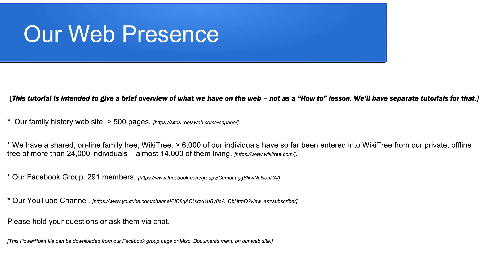
Presenter's Notes:
This presentation isn't intended to teach you how to use these
websites. It's just a quick tour to show you what's there.
Please hold your questions till until the end.
I'll show you our 4 web locations: Our family history webpage; Our family tree; Our FB group page; & Our YouTube channel.
Slide 2
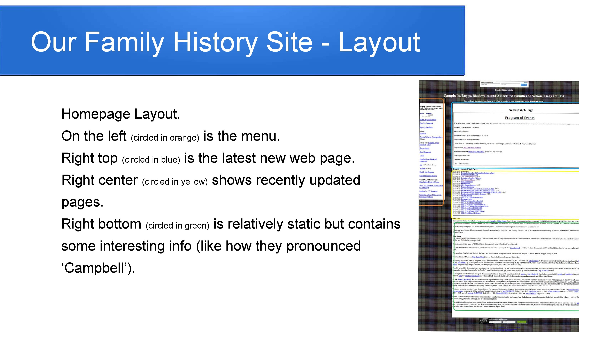
Presenter's
Notes:
Left panel - Menu.
Top of right panel - Newest web page.
Middle of right panel - Links to recently updated pages.
Bottom of right panel - Family history basics
Slide 3
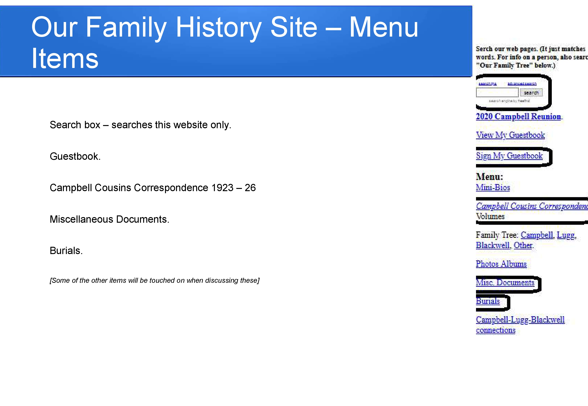
Presenter's
Notes:
The search box, circled at the top or the menu,
offers simple or advanced searches with ANDs, ORs, NOTs, etc. It
searches for all or our web pages that have words that match your
query.
Circled below that is an invitation to sign our guest book.
Also circled below that is a link to one of the most important parts of our website, the four volumes of the Campbell Cousins Correspondence, 1923 - 1926. Each volume contains about 100 paged of letters, many with photographs, all with links and footnotes that identify who or what is being discussed.
Below that is a link to our Miscellaneous Documents, more letters, newsclips, reunion minutes, tutorials, presentations, etc.
Below that is our Burials link, of great value to those interested in cemeteries
Slide 4
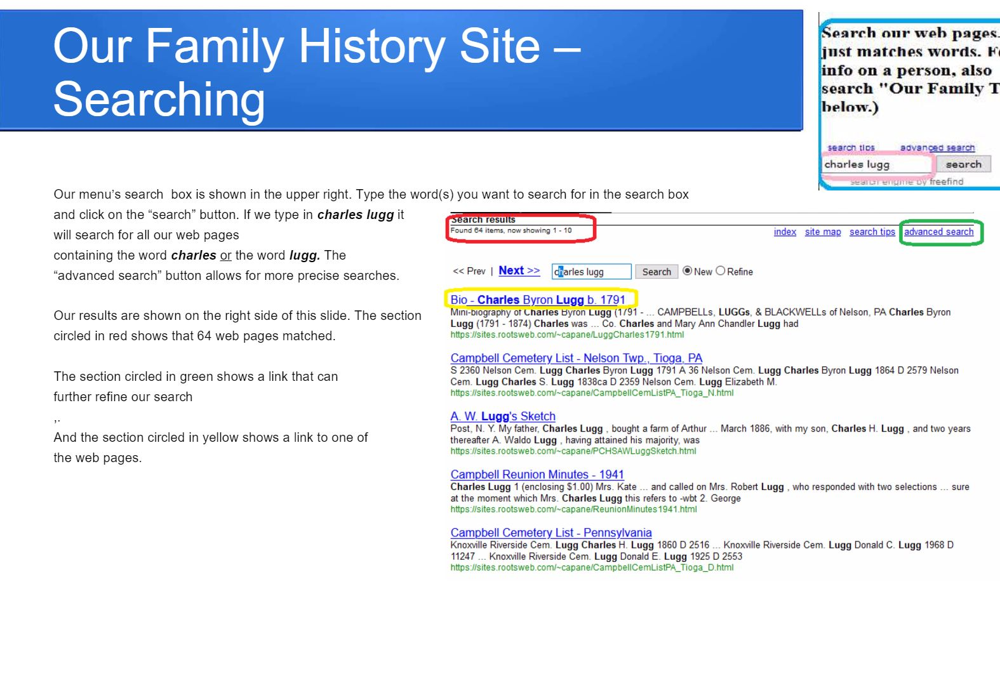
Presenter's
Notes:
Two images are shown here.
The smaller one, top right, circled in blue, is the search box on our family history website's home page, filled out for a query
The larger image, below that, shows the result after clicking on the "search" button. As with a Google, Yahoo or Duck Duck Go search of the web, it shows a series of "hits" - webpages that match the search criteria. The top line of each is a link to that particular webpage.
Slide 5
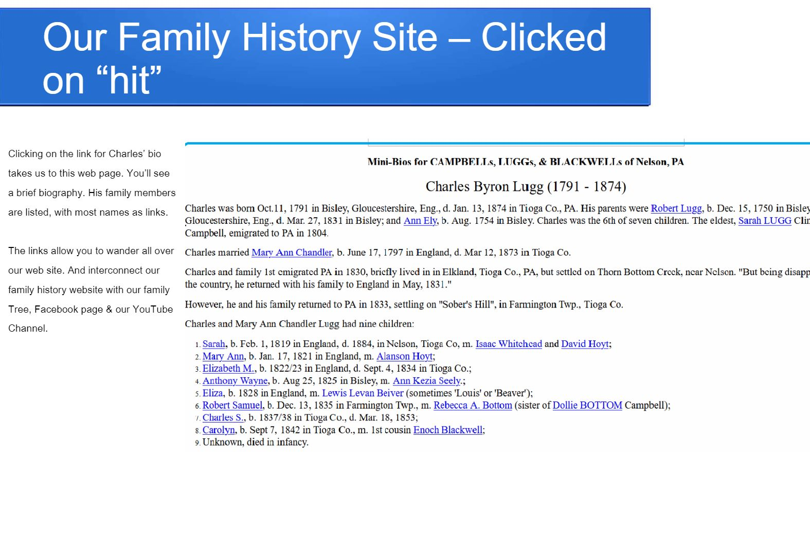
Presenter's
Notes:
You don't see it here, but many of the mini- bios have a long list
(with links) to documents that refer to that person or that that
person wrote.
Slide 6
Presenter's Notes:
Please visit our Guest Book, sign in and leave a comment. Your feedback
is important.
The number circled in green is a "captcha", a code that needs to be entered to prove that you're not a robot.
Slide 7
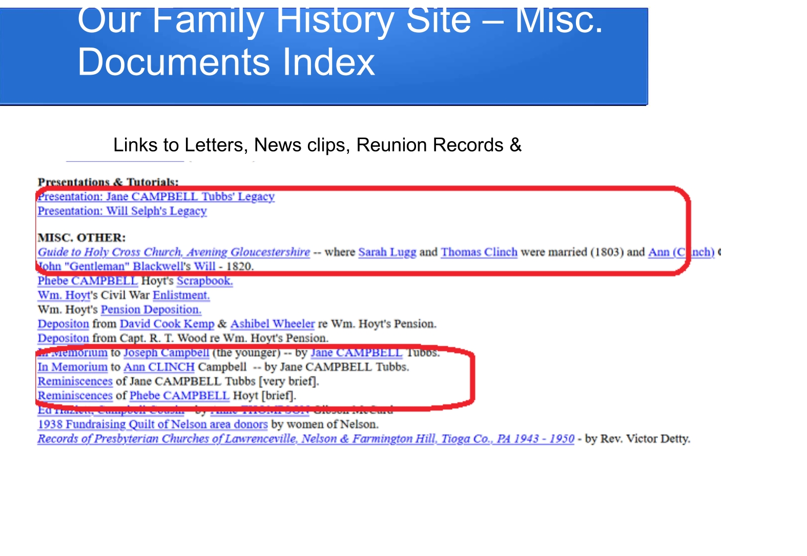
Presenter's Notes:
When you visit the Documents Index you see a long list of documents,
grouped by type: letters, news clips, photo albums, etc. Toward the
bottom are two of most important sections: "Presentations and
Tutorials" and "Misc. Others." I recommend all of the items circled in
red.
The presentations, given at other reunions, will be joined by this one. And soon by a series of tutorials.
The booklet I picked up at Avening's Holy Cross Church, is fascinating. This place, where Sarah Lugg was first married and where Ann Clinch was baptized, was built by Queen Matilda, the wife of William the Conqueror.
Many Blackwells will be intrigued by the will of Enoch's father, John Blackwell.
The two In Memoriums are Jane (Campbell) Tubbs' tributes to her parents, Joseph and Ann Clinch Campbell, filled with glimpses of pioner life when livestock (and children) had to be protected from wolves, cougars and bears.
The two brief Reminiscences are the memories Jane and her sister, Phebe (Campbell)Hoyt had of growing up in pioneer PA, what schooling was like and what the women had to do to work the farms while the men were away fighting to preserve the Union.
Slide 8
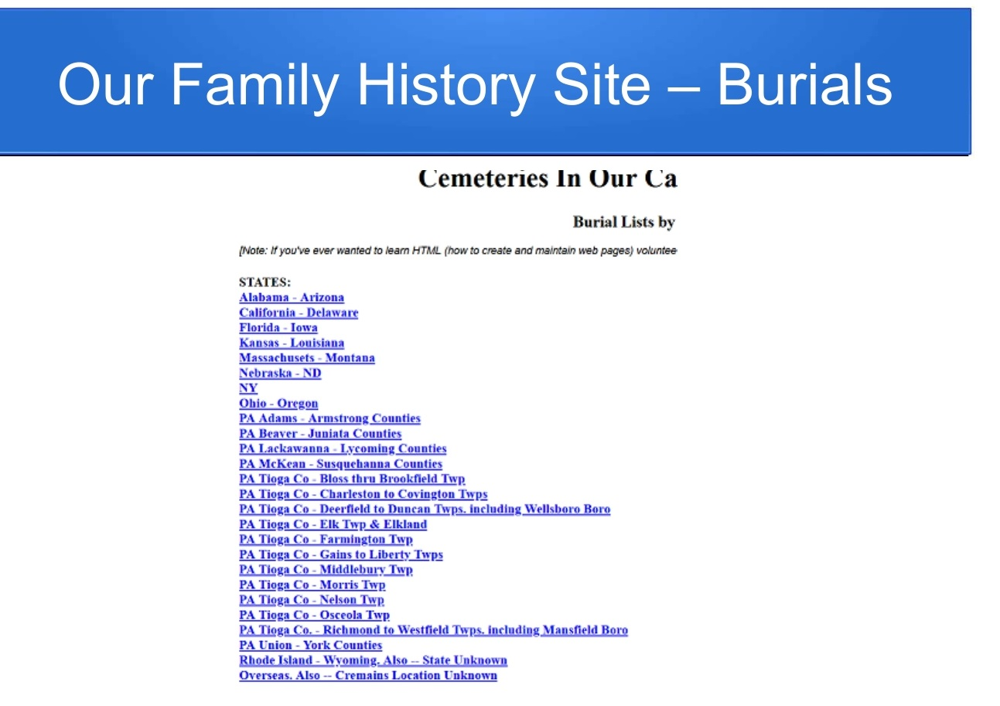
Presenter's Notes:
Our cemetery pages are important to those interested in visiting
cemeteries. All known burials of members of our family are
included.
Those planning to visit a particular cemetery may find it useful to be able to see all of the Campbell-Lugg-Blackwell burials in that cemetery.
Those traveling may be interested in finding out if there areies along their route (or where they are staying) that have burials of family members.
This cemetery index is organized by state and country. Where there are many burials, it's broken down by county, or even by township.
Slide 9
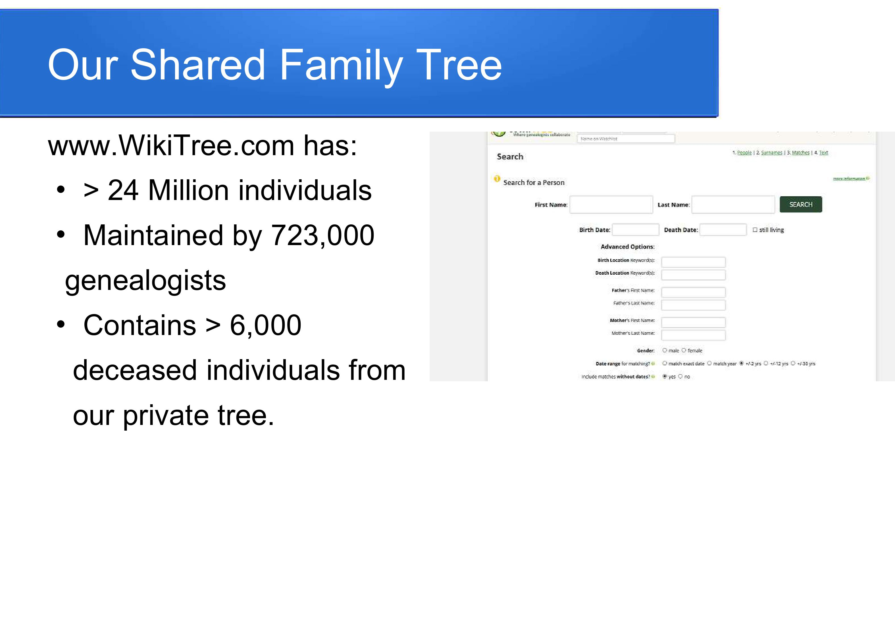
Presenter's Notes:
We're about halfway through moving our family tree to a website hosing
a single, world-wide tree. As you can see, it contains a lot of dead
people and is maintained by a lot or living people. Anyone on the
Internet can view this tree for free - no subscription is required.
Each person in the tree has their own web page. In addition to the info about them, there is access to diagrams of their ancestors or descendants, reports, etc.
You're looking at a a search screen. To search for someone, put enter information such as name (for surname, enter surname at birth), birth date, death date, etc.
Data entry volunteers are most welcome. (Our website's menu has a "Volunteer" option.)
Slide 10
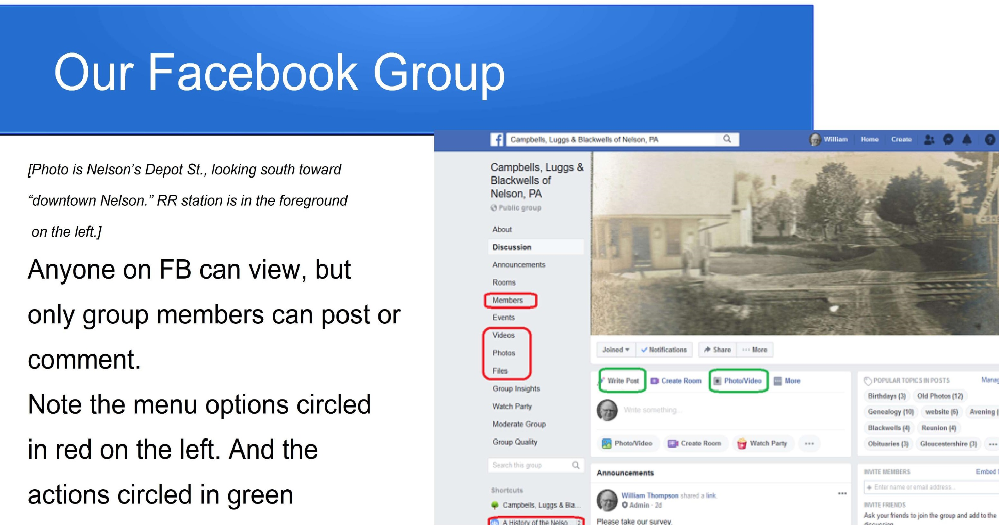
Presenter's Notes:
For those of you who know Nelson, it's hard to see in this photo, but
just past the RR station, coming in from the left is Pease Hill Rd. And
if the photographer had eyes in the back of his head, he'd be looking
up Baxter Lake Rd.
Anyone on Facebook can view this group page, Campbell, Lugg or Blackwell descendants are encouraged to join and to "Write Post"s or post photos or videos (circled in green). And to "Like" or respectfully comment on other's posts.
If you look at the items circled in red you can view a list of the 200+ members of this group. Or view videos, photos or files previously downloaded.
At the very bottom of the slide, circled in red, you'll see a link to another FB group that may be of interest, A History of the Nelson area. Many are members of both groups. I see this group's focus being on our Campbell, Lugg and/or Blackwell cousins; and their having more focus on nostalgia.
Slide 11
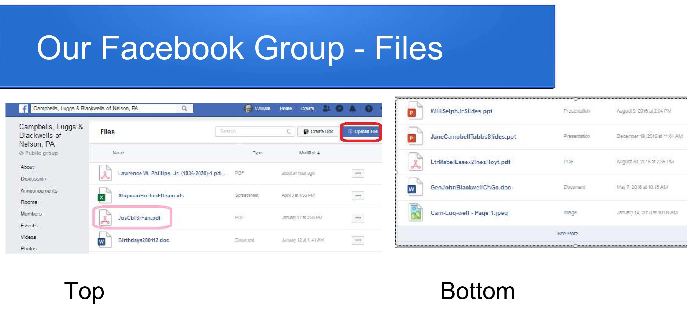
Presenter's Notes:
If you click on "Files" as shown in the previous slide, you see a long
index. You have to scroll down or page down a few times to see all of
it. By the time you do it these files may be farther down the list, but
on the screen you see the top part of the list in the picture on the
left; and the bottom part of the firs page on the right. I recommend
looking at the file circled in red on the left. And any of the files
shown on the right, some of which are also available on our family
history website's Documents Index.
Any of these files can be downloaded to your computer.
Slide 12
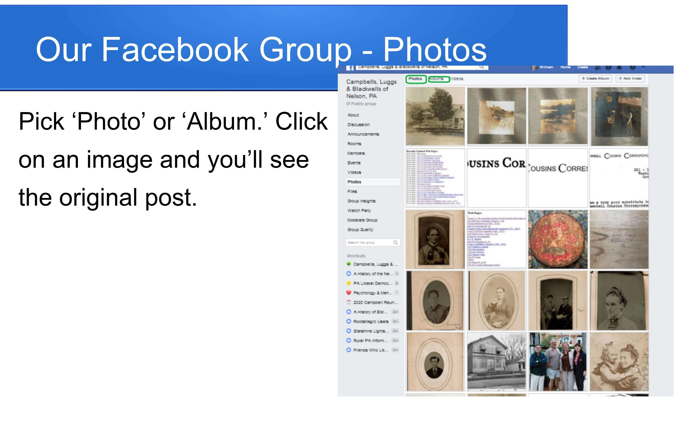
Presenter's Notes:
If you click on "Photos" as shown in the previous slide, you see lots
of "thumbnails" of photos and photo albums. If you click on one you
will see the original post with text and any comments. And, if the
people or objects in the photo have been "tagged" you will see that
text.
Any of these photos can be downloaded to your computer.
Slide 13
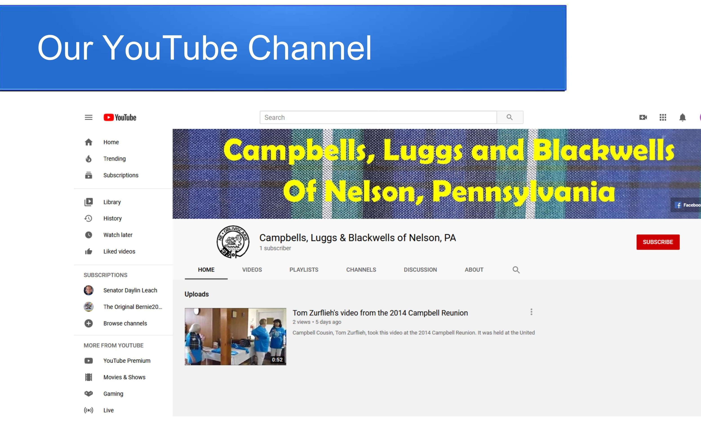
Presenter's Notes:
Thanks to Betsy Gorman we now have our very own YouTube Channel.
Some interesting videos are in the playlist.
It's your job to add more videos that you think would be of interest to your Campbell, Lugg or Blackwell cousins.
Slide 14
Copyright © 2020 William B. Thompson. Commercial use prohibited.